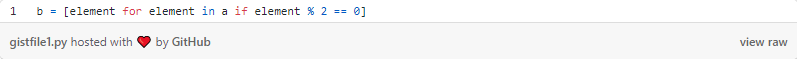
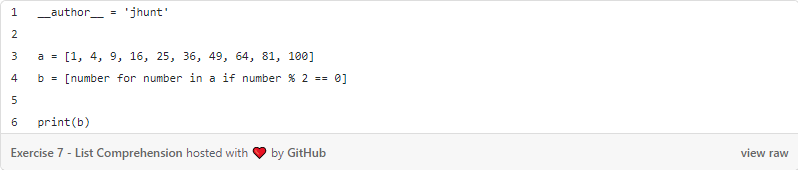
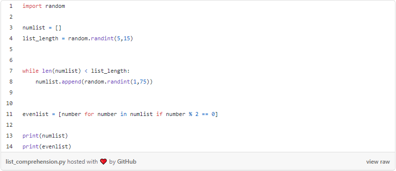

HW3 <<
Previous Next >> Rock Paper Scissors Solutions剪刀石頭布解決方案
List Comprehensions Solutions列表理解
Exercise 7練習七
Let's say I give you a list saved in a variable: a = [1, 4, 9, 16, 25, 36, 49, 64, 81, 100]. Write one line of Python that takes this list a and makes a new list that has only the even elements of this list in it.
假設我給你一份用變量保存的清單:a=[1,4,9,16,25,36,49,64,81,100]。 寫一行蟒蛇把這個列表取a,並編制新的列表,其中只有這個列表中的偶數成分。
Sample solutions樣本解
For the meat of the solution, check this out:
關於溶液的肉,請看這個: 
And for a "complete" solution, look at this:
至於"完全"的解決方案,請看這個:

For a solution that uses the random library to generate test lists, check this out:
要用隨機庫生成測試列表的解,請檢查這個:

Rock Paper Scissors 剪刀石頭布
Exercise 8 (and Solution)練習八(及解決方法)
Make a two-player Rock- Paper-Scissors game. (Hint: Ask for player plays (using input), compare them, print out a message of con gratulations to the winner, and ask if the players want to start a new game)
做個兩面派搖滾剪刀遊戲。 (提示:要求播放器播放(使用輸入),比較一下,打印出一個致勝者的祝賀信息,並詢問選手是否願意開始新遊戲)
Remember the rules:記住規則:
ㆍRock beats scissors石頭贏剪刀
ㆍScissors beats paper剪刀贏布
ㆍPaper beats rock布贏石頭
Discussion討論
Concepts for this week:本週的概念:
ㆍWhile loops圈圈
ㆍInfinite loops無限循環
ㆍBreak statements中斷聲明
While loops While循環
We have already discussed for loops, or loops that look sequentially (one by one) at elements in a list.
我們已經討論過要按順序(逐個)看列表中的元素的圓環。
There is a second type of loop that works in a slightly different way called a while loop.
有一宗案件:以一種略微不同的方式工作的第二種環路,稱爲"同時環"。
The idea is simple: while a certain condition is True, keep doing something. For example:
想法很簡單:儘管某種條件是真實的,但要繼續做點什麼。 例如:
a = 5
while (a > 0):
print(a)
a -= 1
The output of this code segment is:
這個代碼段的輸出是:
5
4
3
2
1
A particularly useful way to use while loops is checking user input for correctness. For example:
當循環使用時,一個特別有用的方法是檢查用戶輸入是否正確。 例如:
quit = input('Type "enter" to quit:' )
while quit != "enter":
quit = input('Type "enter" to quit:' )
The uses for this are infinite, and can (and should!) be combined with conditionals to yield the most efficient results.
這個用途是無限的,可以(也應該!)與條件結合,產生最有效的效果。
Infinite loops無限環路
An infinite loop is a loop that never stops.
無窮循環是永不停息的循環。
This means that the condition in the beginning of the while loop will always be true.
這意味着,當環路開始時,環路中的條件會改變始終如一
For example:例如:
i = 5
while i > 0:
print("Inside the loop")
What will happen is the loop will print out the phrase "Inside the loop" forever and ever. If you are running your computer, you will have to "'kill the program" to stop it.Each operating system has a different way of "kiling a progtam" to get out of an infinite loop.
將會發生的是,環路將永遠打印出"圈內"這個短語。如果你在跑步，在你的電腦上,你必須"殺掉程式"才能阻止它。每個操作系統都有不同的方式“殺死程序”以擺脫無限循環。
On Linux: in the terminal, type "CTRL-C" to kill the program that is currently running in the terminal. If you are using the IDLE Python IDE, then you must press "CTRL-D" to exit your running program. When in doubt, do a Google search before you start programming!
在Linux上:在終端上鍵入"CTRL-C",以殺死當前正在運行的程序如果你是使用IDLE Python IDE,然後按"CTRL-D"鍵退出運行程序。 如有疑問,可按以下連結進行:在開始編程之前,先搜索谷歌!
On Windows: type "CIRL-ALI-DEL" and open the task manager to kill the program.
在視窗上:鍵入"CIRL-ALI-DEL"並打開任務管理器以殺死程序。
On Mac: right-click on the task, and kill the program that is running forever.
在Mac上:右鍵單擊任務,並殺死運行已久的程序。
If you find yourself in an infinite loop, your program will never end.
如果你發現自己陷入無限循環,你的程序將永無休止。
Break statements決斷語句
A break statement stops the execution of a loop before the original condition is met. While the use of a break statement will often start an argument about good coding practices, sometimes it is useful.
斷開語句在滿足原始條件之前停止執行循環。 休息時聲明往往會引發關於良好編碼做法的爭論,有時它是有用的。
For example:例如:
while True:
usr_command = input("Enter your command: ")
if usr_command == "quit":
break
else:
print("You typed " t usr_command)
In this case, the break statemnent is used to break off the "infinite while loop" that we have constructed with the while True statemment.
在這種情況下,break 狀態全數被用來斷開我們與the
而真正的國度。
HW3 <<
Previous Next >> Rock Paper Scissors Solutions剪刀石頭布解決方案